Hồ Sơ Cảnh Sát Phân Khu Newton

Giới Thiệu Đơn Vị
Trụ sở chính của Phân khu Cảnh sát Cộng đồng Newton hiện nay tọa lạc tại địa chỉ số 13 Innocence Blvd., phía Nam thành phố Los Santos. Đơn vị chịu trách nhiệm bảo đảm an ninh, tuần tra và kiểm soát trực tiếp cho một địa bàn chiến lược, có diện tích rộng khoảng 9 dặm vuông.
Phương Châm & Cách Thức Làm Việc
Phân khu Newton vận hành hoàn toàn dựa trên nền tảng cơ sở dữ liệu hiện đại, cung cấp mã định danh cá nhân phục vụ tối đa cho cư dân sống tại khu vực quản lý và vùng lân cận. Do vị trí địa lý nằm ngay tại khu vực sầm uất phía Nam thành phố – nơi tập trung mạng lưới băng đảng tinh vi và tỷ lệ tội phạm nguy hiểm phức tạp, toàn thể đội ngũ Sĩ quan tại Newton luôn luôn hoạt động hết công suất và cống hiến mọi nỗ lực cao nhất.
Nhiệm vụ cốt lõi hàng đầu của Sở Newton là bảo vệ tuyệt đối tính mạng, sức khỏe cũng như tài sản hợp pháp của nhân dân; chủ động tuần tra nhằm giảm thiểu tối đa tỷ lệ tội phạm đường phố, đồng thời tăng cường thắt chặt an ninh trật tự công cộng. Đơn vị luôn gắn kết, phối hợp chặt chẽ với cộng đồng dân cư để nâng cao chất lượng đời sống xã hội. Mỗi Sĩ quan khi thực thi nhiệm vụ luôn khắc cốt ghi tâm lòng danh dự, sự chính trực và đạo đức nghề nghiệp cao quý.
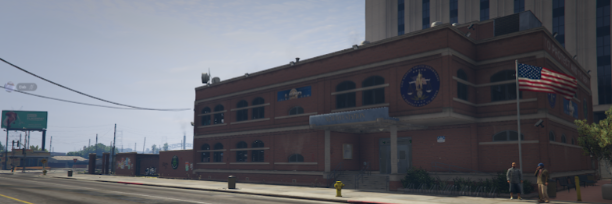
Vị Trí Chiến Lược
Trụ sở cảnh sát Newton được xây dựng kiên cố bằng gạch đỏ đặc trưng, án ngữ ngay trục lộ chính Innocence Blvd, đảm bảo khả năng cơ động phản ứng nhanh đối với mọi tình huống khẩn cấp xảy ra ở toàn bộ khu vực Nam Los Santos.
Tài Liệu: Lịch sử & Phân Quyền Hành Pháp
1. Nguồn Gốc & Sự Hình Thành Sở Cảnh Sát Los Santos (1889 - 1940)
Được chính thức khai sinh vào năm 1889, Sở Cảnh sát Los Santos (Los Santos Police Department - LSPD) bắt đầu hành trình của mình từ một lực lượng trị an khiêm tốn gồm chưa tới 100 sĩ quan, phục vụ một thị trấn đang trong cơn khát vàng và sự bùng nổ của tuyến đường sắt xuyên bang. Vào đầu thế kỷ 20, trước làn sóng nhập cư ồ ạt, sự phồn vinh của ngành công nghiệp điện ảnh Vinewood và kỷ nguyên cấm rượu (Prohibition Era), LSPD đã buộc phải rũ bỏ mô hình dân binh địa phương để thiết lập cấu trúc sĩ quan thường trực.
Đây là kỷ nguyên LSPD định hình châm ngôn cốt lõi của mình: "To Protect and to Serve" (Bảo vệ và Phục vụ). Sở cảnh sát bắt đầu cơ giới hóa lực lượng tuần tra, đưa vào sử dụng hệ thống liên lạc vô tuyến hai chiều và thiết lập nền móng kỷ luật thép cho một trong những lực lượng thực thi pháp luật có quy mô lớn nhất thế giới hiện đại.
2. Kỷ Nguyên Khói Lửa, Khủng Hoảng Băng Đảng & Đặc Nhiệm C.R.A.S.H (1970 - 1990)
Bước vào thập niên 70 và 80, bộ mặt của Los Santos bị tàn phá nặng nề bởi sự trỗi dậy của các tổ chức tội phạm có vũ trang, đặc biệt là chiến tranh thanh trừng đẫm máu giữa các băng đảng khét tiếng như Ballas, Families và Vagos. Làn sóng ma túy càn quét các khu ổ chuột phía Nam thành phố đã biến đường phố nơi đây trở thành những chiến trường đô thị thực thụ.
Để đối phó với cuộc khủng hoảng, LSPD đã thay đổi toàn bộ học thuyết tác chiến, dẫn đến sự ra đời của lực lượng đặc nhiệm chống băng đảng khét tiếng: C.R.A.S.H (Community Resources Against Street Hoodlums). Dù mang lại hiệu quả trấn áp cực kỳ mạnh mẽ, sự trao quyền thiếu giám sát đã khiến một bộ phận sĩ quan C.R.A.S.H tha hóa. Những vụ tống tiền, ngụy tạo bằng chứng và sử dụng vũ lực phi pháp đã đẩy uy tín của LSPD xuống đáy vực.
Đỉnh điểm của sự phẫn nộ bùng nổ thành thảm kịch Bạo loạn Los Santos năm 1992 (1992 Los Santos Riots). Hàng ngàn người đổ ra đường đập phá, hôi của và phóng hỏa. Lực lượng mỏng mỏng của LSPD nhanh chóng vỡ trận, buộc Thống đốc bang phải ban bố tình trạng khẩn cấp và huy động Lực lượng Vệ binh Quốc gia. Sự kiện đẫm máu này là đòn bẩy buộc LSPD phải ký kết Nghị định Đồng thuận (Consent Decree) với Bộ Tư pháp Liên bang, mở đường cho một cuộc đại thanh trừng nội bộ.
3. Kỷ Nguyên Số, Cải Tổ Đạo Đức & Tác Chiến Hiện Đại (2000 - Nay)
Rũ bỏ những tàn dư của quá khứ, LSPD bước vào thế kỷ 21 với một cuộc "thay máu" toàn diện. Lực lượng C.R.A.S.H bị giải thể vĩnh viễn, thay thế bởi Phòng Tình báo Băng đảng & Ma túy (GND - Gang and Narcotics Division) hoạt động dưới quy trình kiểm soát nhân quyền gắt gao. LSPD áp dụng chính sách minh bạch tối đa, bắt buộc 100% Sĩ quan Tuần tra (Patrol Officers) phải kích hoạt hệ thống Camera hành trình (Dashcam) và Camera gắn ngực (Bodycam) đồng bộ trực tiếp với máy chủ đám mây của thành phố.
Ngày nay, mũi nhọn chiến thuật của cơ quan được giao cho Phân khu Đô thị (Metropolitan Division), nơi chứa đựng lực lượng S.W.A.T tinh nhuệ, Đơn vị Khuyển sát (K-9), và Đội Kỵ binh. Trên không trung, Air Support Division (ASD) với phi đội trực thăng tối tân tạo thành mạng lưới trinh sát 3 chiều, phối hợp cùng hệ thống trí tuệ nhân tạo (AI) phân tích dữ liệu tội phạm theo thời gian thực. LSPD hiện đại không chỉ là một cơ quan bảo an, mà đã trở thành một cỗ máy quân sự - trinh sát được tối ưu hóa tuyệt đối cho môi trường đô thị phức tạp.
4. Chuyên Khảo: Thiết Chế Phân Quyền Giới Hạn Pháp Lý LSPD & LSSD
Trong hệ sinh thái an ninh của bang San Andreas, sự phân định thẩm quyền giữa Sở Cảnh sát Los Santos (LSPD) và Cục Cảnh sát Trưởng Hạt (LSSD - Los Santos County Sheriff's Department) là yếu tố hiến định sống còn để đảm bảo cỗ máy tư pháp vận hành trơn tru, không dẫm chân lên nhau.
Dù hai cơ quan duy trì Hiệp ước Tương trợ (Mutual Aid) để bọc lót cho nhau trong các thảm họa cấp độ cao (khủng bố, bạo động, thiên tai), quyền hạn cốt lõi của họ được chia tách rõ rệt dựa trên ranh giới địa lý, học thuyết tác chiến, và bản chất nghiệp vụ tư pháp. LSSD nắm giữ quyền lực trị an tối cao của toàn cấp Hạt, trong khi LSPD là lực lượng thực thi pháp luật chuyên trách cấp Thành phố (Municipal).
| Tham chiếu Pháp lý | Sở Cảnh Sát Los Santos (LSPD) | Cục Cảnh Sát Trưởng Hạt (LSSD) |
|---|---|---|
| Phạm Vi Lãnh Thổ (Jurisdiction) | Nắm toàn quyền kiểm soát khu vực hành chính nội đô của Thành phố Los Santos (bao gồm Mission Row, Vinewood, Vespucci, Rockford Hills, Davis...). Sĩ quan LSPD được phép vượt biên giới (Pursuit) khi truy kích nóng tội phạm tẩu thoát ra ngoài thành phố. | Phụ trách toàn bộ Hạt Los Santos và Blaine County, bao trùm các khu vực chưa hợp nhất (Unincorporated areas), đường cao tốc liên bang, vùng hoang mạc, đồi núi, và các thành phố ngoại ô đã ký Hợp đồng Bảo an (Contract Cities như Paleto Bay, Sandy Shores). |
| Học Thuyết Tuần Tra & Tác Chiến | Tập trung vào Tuần tra đô thị mật độ cao (Urban Policing). Phản ứng cực nhanh với các mã khẩn cấp (911) nội thành, trấn áp băng đảng đường phố, điều tra án mạng khu dân cư và xử lý tắc nghẽn/tai nạn giao thông nội thị. | Tập trung vào Tuần tra đường dài (Highway/Rural Patrol). Tuần tra các tuyến cao tốc, hỗ trợ vũ trang cho các địa bàn hẻo lánh, tìm kiếm cứu nạn (Search & Rescue) trên địa hình hiểm trở và tuần tra biên giới hạt. |
| Hệ Thống Giam Giữ (Custody & Corrections) | Chỉ có thẩm quyền quản lý các buồng tạm giam (Holding Cells) tại đồn cảnh sát khu vực. Tù nhân chỉ được giữ tối đa 72 giờ phục vụ công tác thẩm vấn trước khi bắt buộc bàn giao cho hệ thống nhà ngục của Sheriff. | Nắm độc quyền vận hành toàn bộ Hệ thống Nhà giam Cấp hạt (County Jail System), bao gồm siêu nhà tù Twin Towers Correctional Facility. Chịu trách nhiệm giam giữ dài hạn và phục hồi nhân phẩm phạm nhân. |
| Nghiệp Vụ Tòa Án & Lệnh Dân Sự | LSPD không có trách nhiệm bảo vệ tòa án hay thực thi các lệnh hành chính dân sự thông thường. Trách nhiệm chỉ dừng ở việc Sĩ quan ra hầu tòa với tư cách điều tra viên/nhân chứng. | Độc quyền cung cấp an ninh cho Tòa Thượng thẩm San Andreas (Bailiffs), áp tải tù nhân từ nhà giam đến tòa, và thực thi các phán quyết dân sự (Trục xuất, Tịch thu biên biên tài sản, Tống đạt trát hầu tòa). |
| Đơn Vị Đặc Nhiệm Phản Ứng | Vận hành đội S.W.A.T (Special Weapons And Tactics) trực thuộc Phân khu Metropolitan, chuyên giải cứu con tin, chống khủng bố và tấn công Cận chiến (CQB) trong môi trường nhà cao tầng đô thị. | Vận hành đội S.E.B (Special Enforcement Bureau), với trang bị cơ động hạng nặng nhằm thực hiện các chiến dịch đột kích quy mô lớn, truy quét tội phạm ngầm ở vùng đồi núi, và cứu hộ trực thăng. |
Hệ thống Cấp Bậc & Huân Chương
Cảnh Sát Cấp Cao
Quân hàm kim loại đính trực tiếp trên cổ áo và cầu vai áo vét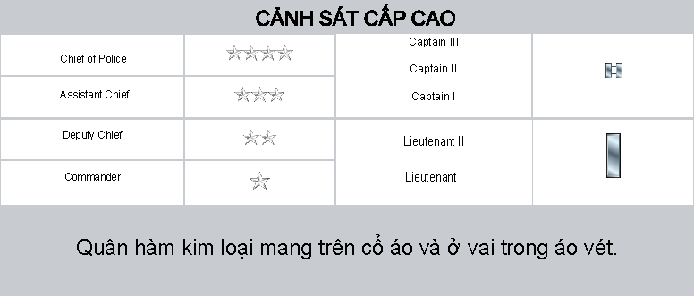
Sĩ Quan & Thanh Tra
Quân hàm tiêu chuẩn được thêu trực tiếp trên ống tay áo đồng phục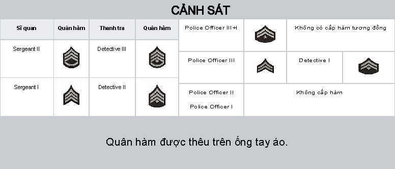
PHẦN THƯỞNG, TUYÊN DƯƠNG, BIỂU DƯƠNG & HUY CHƯƠNG
Sở trao tặng huân chương cho các cá nhân có sự cống hiến xứng đáng. Dưới đây là danh sách chi tiết:1. Huân Chương Dũng Cảm (Medal of Valor)
"Medal of Valor" là phần thưởng cao quý nhất, bày tỏ lòng dũng cảm, trao cho cảnh sát có thành tích xuất sắc, mạo hiểm mạng sống vì nhiệm vụ.
2. Giải Thưởng Tự Do (Liberty Award)
Liberty Award là huân chương dũng cảm, được trao cho cảnh sát bị tử trận hay bị trọng thương trong lúc làm nhiệm vụ.
3. Huy Chương Anh Hùng (Police Medal for Heroism)
Huân chương của hành động anh hùng trong nhiệm vụ, do được gọi hay do tình nguyện làm nhiệm vụ, bắt buộc phải có Medal of Valor.
4. Ngôi Sao Cảnh Sát (Police Star)
Phần thưởng dũng cảm dành cho cảnh sát có kỹ năng tác chiến linh động, vô hiệu hóa tình thế nguy hiểm căng thẳng.
5. Huy Chương Cứu Người (Police Life-Saving)
Phần thưởng được trao cho cảnh sát dũng cảm giải cứu hoặc cố giải cứu đồng đội/người dân đang gặp hiểm nguy.
6. Phục Vụ Xuất Sắc (Distinguished Service)
Vinh danh sự phục vụ xuất sắc, thể hiện tinh thần trách nhiệm và tận tụy vượt mức yêu cầu nhiệm vụ thông thường.
7. Phục Vụ Đáng Khen Ngợi (Meritorious Service)
Ghi nhận quá trình phục vụ mẫu mực, thể hiện trách nhiệm cao độ trong thời gian dài công tác tại sở cảnh sát.
8. Huy Chương Thành Tựu (Meritorious Achievement)
Vinh danh thành tựu nổi bật mang lại lợi ích lớn cho sự phát triển hoặc hiệu quả hoạt động chung của LSPD.
9. Phục Vụ Xuất Sắc Của Ủy Ban
Phần thưởng đặc biệt được trực tiếp Ủy ban Cảnh sát trao tặng để ghi nhận những cống hiến mang tính chiến lược.
10. Cảnh Sát Vì Cộng Đồng (Community Policing)
Trao cho cá nhân có đóng góp to lớn trong việc bảo vệ, xây dựng và củng cố mối quan hệ tin cậy với cộng đồng.
11. Quan Hệ Nhân Sinh (Human Relations)
Tôn vinh nỗ lực duy trì và phát triển sự gắn kết, tinh thần nhân đạo và hòa giải trong công tác ứng xử.
12. Tuyên Dương Đơn Vị (Unit Citation)
Phần thưởng tập thể danh giá nhất dành cho một đơn vị có thành tích tác chiến đồng đội hoặc chuyên môn xuất sắc.
— Trích bởi LSPD High Command —
Cơ Cấu Tổ Chức & Đơn Vị
Sơ Đồ Tổ Chức Los Santos Police Department
CẬP NHẬT: 11 THÁNG 07 NĂM 2026
Chief Of Police
Operations Central Bureau
Mission Row Division
Captain IIVespucci Division
Counter-Terrorism & Special Operations Bureau
Metropolitan Division
Air Support Division
Detective Bureau
Gang & Narcotics Division
Major Crimes Division
Chi Tiết Phân Khu Newton
Cơ cấu vận hành tổ chức tại Phân khu Newton được tinh gọn và phân phối khoa học thành 3 Phân khu chính kết hợp cùng các Đơn vị bổ trợ phối hợp.
1. Bộ Phận Tuần Tra (NPD)
Lực lượng nòng cốt bám sát địa bàn 24/7 bảo vệ an ninh trật tự công cộng liên tục.
2. Bộ Phận Giao Thông (STD)
Lực lượng kiểm soát tuyến đường, điều tốc và xử lý va chạm tại khu vực phía Nam.
3. Lực Lượng Cơ Động (METRO)
Đơn vị Cảnh sát Cơ động Đặc nhiệm - Chuyên trách phản ứng nhanh, giải cứu con tin và triệt phá tội phạm vũ trang.
Đội Hỗ Trợ Không Trung (ASU)
Đơn vị hỗ trợ trinh sát tầm cao, phối hợp vây bắt tội phạm từ trên không.
Đội Phản Ứng Nhanh (RED)
Lực lượng phản ứng tình huống đặc biệt cơ động trực thuộc phân khu quản lý khu vực phía Nam.
* Lưu ý: Hệ thống sơ đồ hoạt động bao gồm cả việc điều động linh hoạt các đơn vị đặc thù khác trực tiếp từ Trụ Sở Chính khi có đại án.
Thư Viện Thực Địa & Hoạt Động
1. Trụ Sở Chính Đơn Vị
Toàn cảnh mặt tiền trụ sở cảnh sát cộng đồng Newton tọa lạc tại Innocence Blvd, luôn sẵn sàng tiếp nhận và hỗ trợ dân cư 24/7.
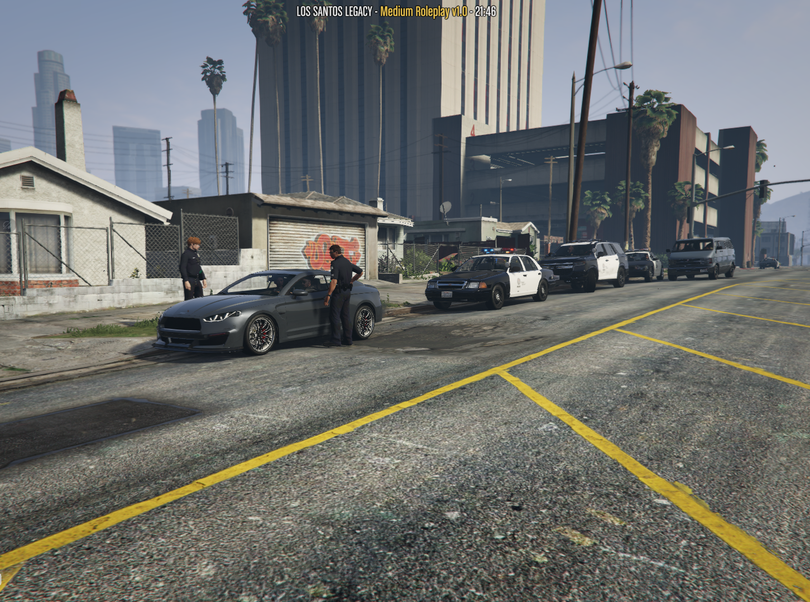
2. Kiểm Soát Giao Thông
Hai sĩ quan thuộc bộ phận tuần tra (NPD) đang tiến hành dừng và kiểm tra hành chính một phương tiện có dấu hiệu vi phạm.
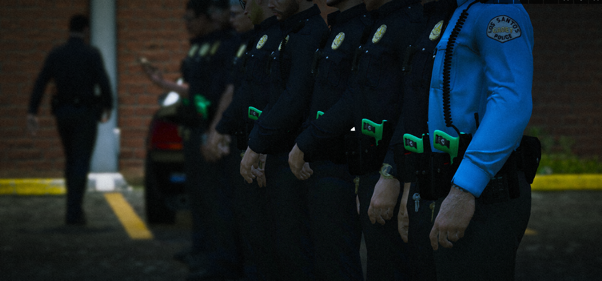
3. Đội Hình Trang Bị
Sĩ quan xếp hàng chỉnh tề, kiểm tra trang thiết bị tiêu chuẩn bao gồm súng điện (Taser) trước khi lên đường bắt đầu ca trực mới.
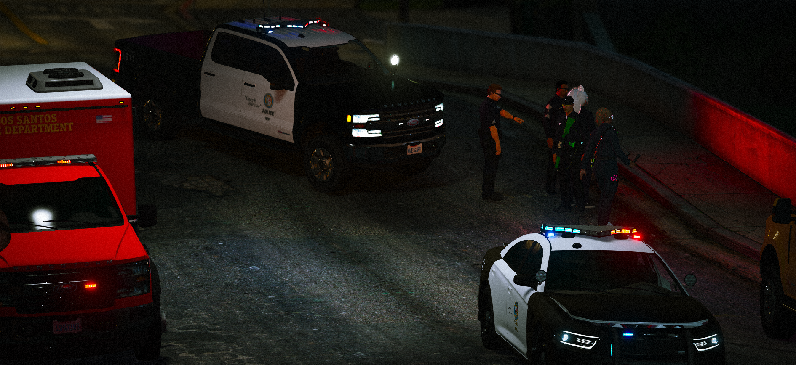
4. VÀNH ĐAI AN NINH TẠI ĐIỂM NÓNG
xe tuần tra và đội hỗ trợ y tế thực hiện phong tỏa hiện trường, đảm bảo khu vực tác chiến được kiểm soát an toàn sau khi sự cố xảy ra.
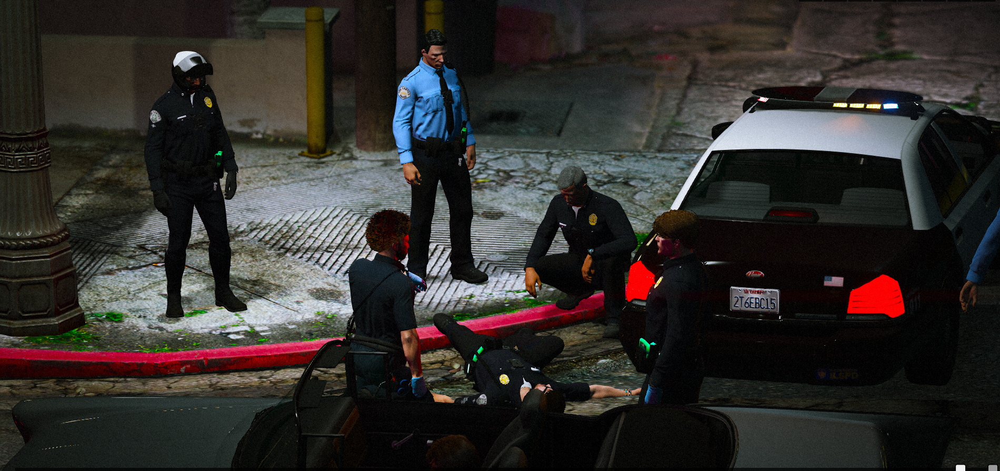
5. XỬ LÝ TÌNH HUỐNG HẬU TAI NẠN
Sĩ quan phụ trách hiện trường tiến hành đánh giá thiệt hại đồng thời duy trì kỷ luật và trật tự, chuẩn bị cho công tác điều tra nguyên nhân.
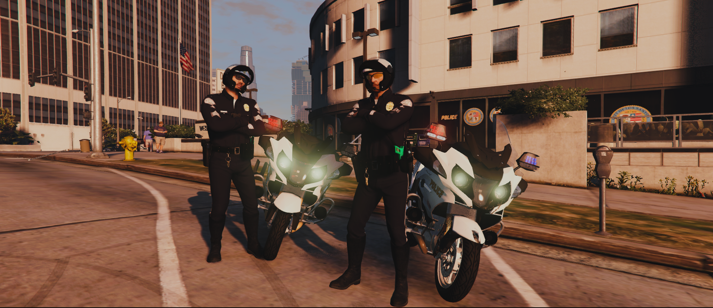
6. ĐỘI TUẦN TRA ĐỘ CƠ ĐỘNG CAO
Bộ phận tuần tra moto luôn trong tư thế sẵn sàng điều tiết giao thông và phản ứng nhanh tại những khu vực có mật độ giao thông phức tạp
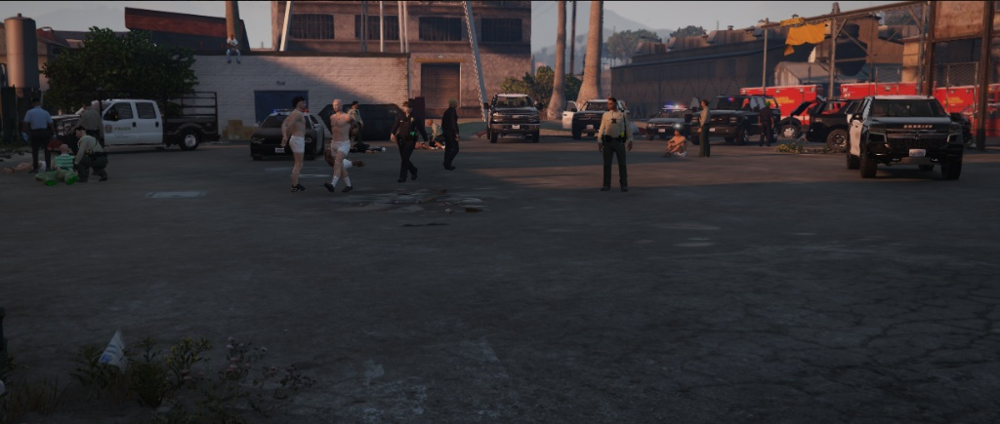
7. KIỂM SOÁT HIỆN TRƯỜNG VỤ ÁN
phối hợp khống chế các đối tượng tình nghi tại hiện trường, đảm bảo tình hình được kiểm soát chặt chẽ trước khi tiến hành xử lý nghiệp vụ.
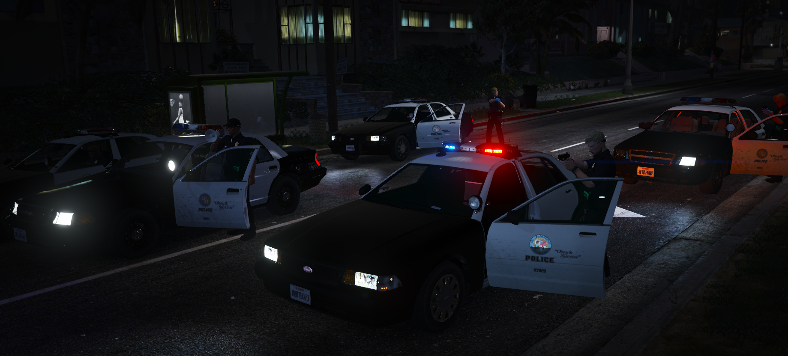
8. THIẾT LẬP FELONY STOP
Triển khai đội hình chặn bắt mục tiêu hình sự nguy hiểm. Sĩ quan duy trì áp lực vũ trang, kiểm soát đối tượng trong xe và sẵn sàng cho các tình huống diễn biến phức tạp.
Hình Ảnh Trong Sở Cảnh Sát
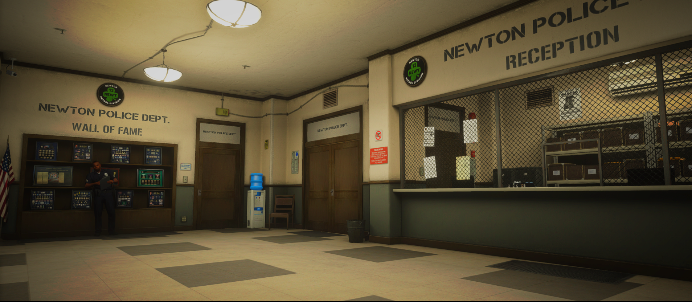
1. Khu Vực Tiền Sảnh
Không gian đón tiếp công dân và ghi nhận các báo cáo ban đầu khẩn cấp tại trạm Newton.
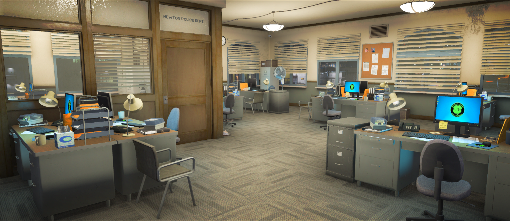
2. Phòng Làm Việc Sĩ Quan
Hệ thống máy tính CID phân tích dữ liệu phục vụ điều tra thực địa liên tục.
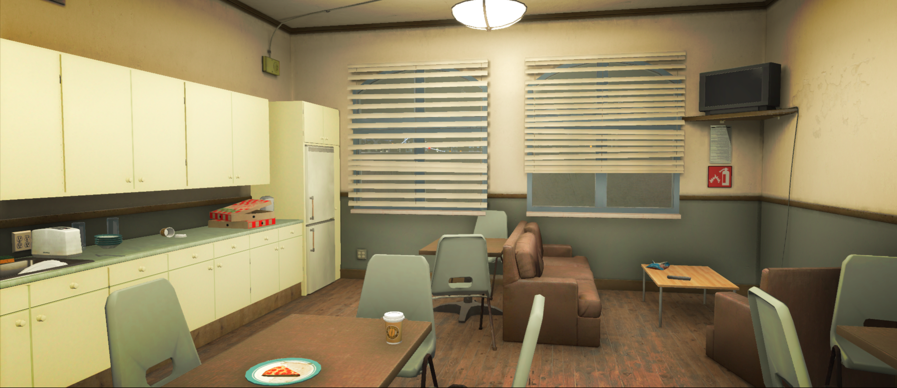
3. Phòng nghỉ nhân viên
Đây là khu vực dành riêng cho sĩ quan và nhân viên LSPD nghỉ ngơi giữa các ca làm việc, phòng nghỉ thường có ghế sofa, bàn ăn, bếp nhỏ, tủ lạnh, lò vi sóng, TV và máy pha cà phê.
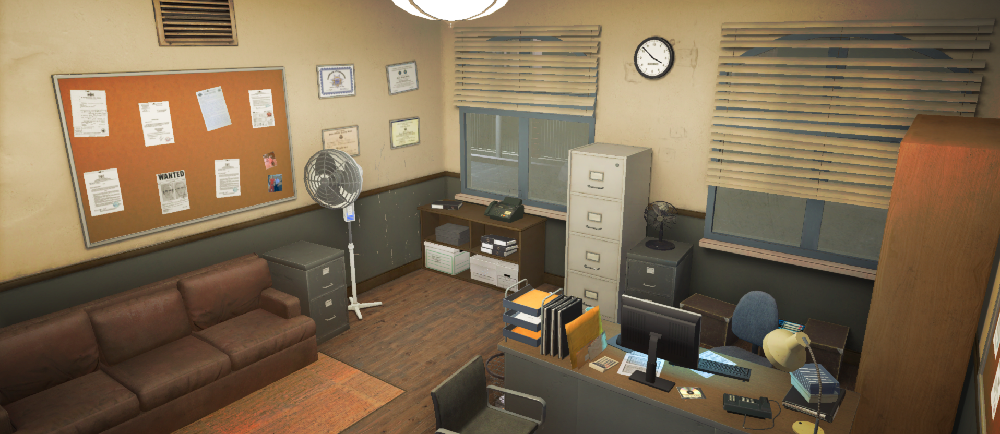
4. Phòng Tác Chiến Chiến Thuật
Nơi các chỉ huy cấp cao và lực lượng METRO hội ý lên phương án đột kích điểm nóng.
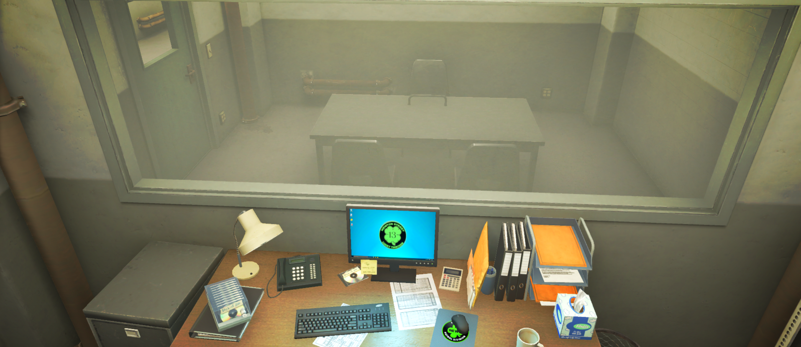
5. Phòng Thẩm Vấn Nghi Phạm
Không gian biệt lập trang bị kính một chiều phục vụ lấy lời khai tội phạm nghiêm trọng.
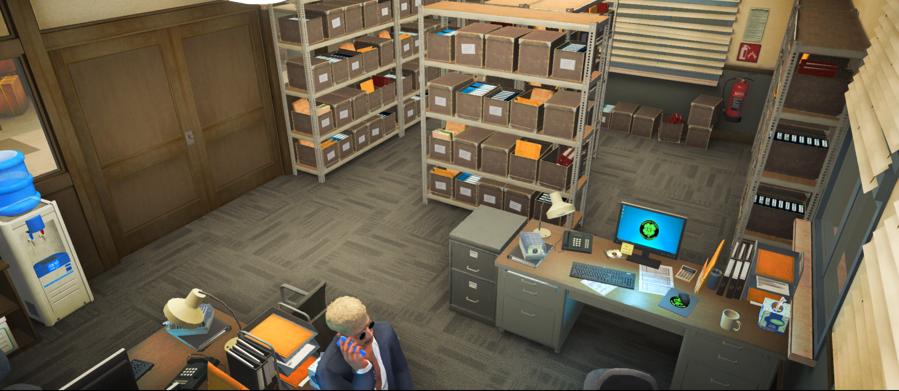
6. Kho Lưu Trữ Tang Vật
Hệ thống bảo an niêm phong nghiêm ngặt, lưu giữ vũ khí và vật chứng đại án hình sự.
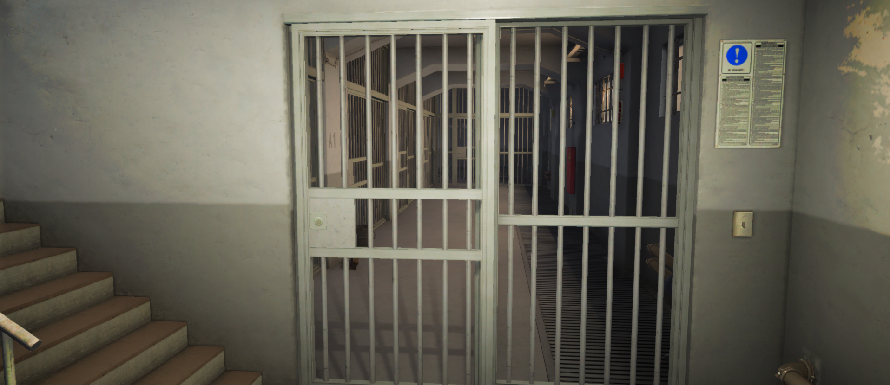
7. Khu Giam Giữ Tạm Thời
Các buồng giam biệt lập kiên cố dành cho đối tượng tình nghi trong vòng 24 giờ điều tra.
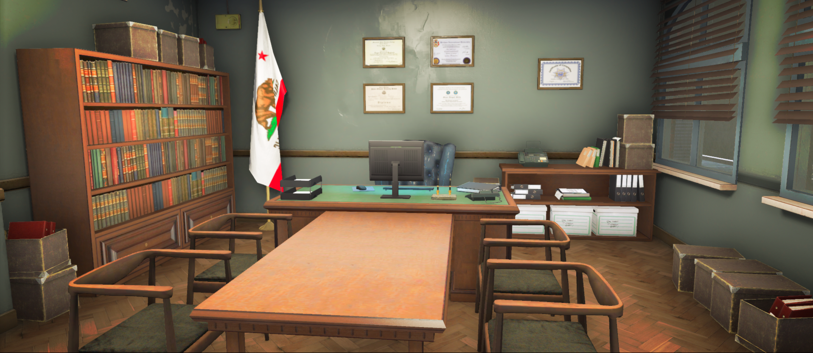
8. Văn Phòng Cảnh Sát Trưởng
Nơi làm việc của Tổng chỉ huy Phân khu đưa ra các quyết định chiến lược nhân sự.
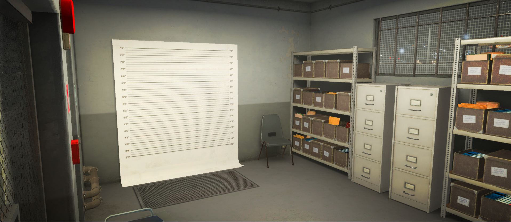
9. Phòng chụp ảnh nhận dạng
khu vực chụp ảnh nhận dạng và lập hồ sơ cho các cá nhân bị bắt giữ hoặc tạm giam.
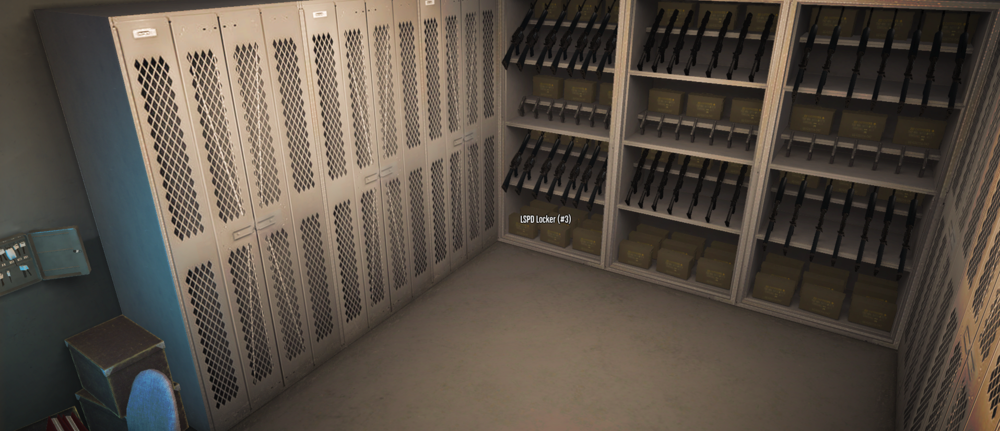
10. Kho Vũ Khí Nội Bộ
Nơi quản lý và cấp phát súng trường, súng điện, giáp chống đạn tiêu chuẩn cho ca trực.
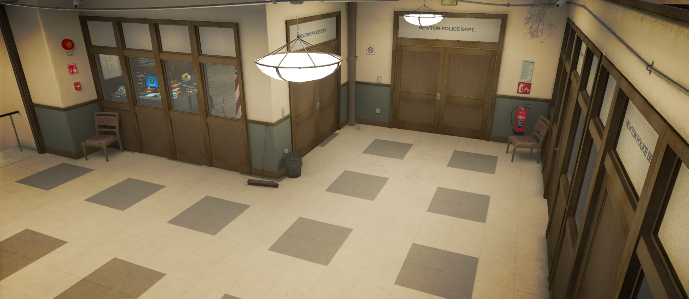
11. Sảnh tầng 2
Sảnh trung tâm tầng hai, kết nối các văn phòng và đơn vị chức năng của Newton Police Department.
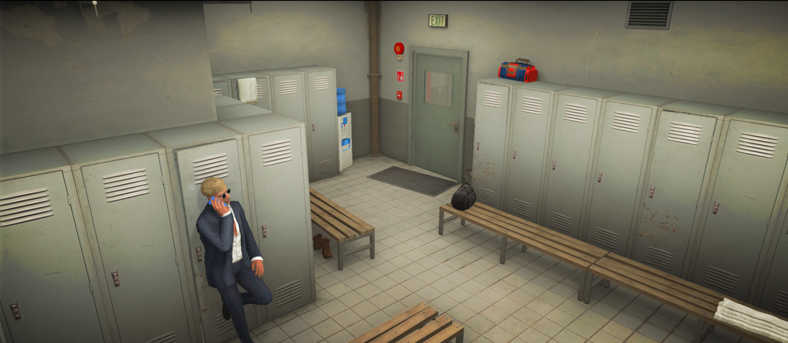
12. Phòng Thay Đồ Đồng Phục
Khu vực tủ cá nhân lưu giữ cảnh phục tiêu chuẩn và quân hàm thêu thắt lưng sĩ quan.
13. Hội Trường Khảo Thí
Nơi tổ chức các lớp học sát hạch Basic Supervisor và Field Training thực hành.
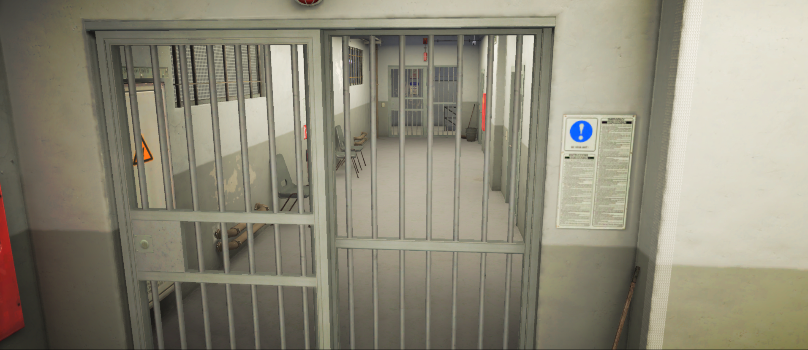
14. Hành lang tiếp cận khu tạm giam và phòng thẩm vấn
hành lang an ninh hạn chế dẫn đến các phòng hỏi cung, khu xử lý nghi phạm và khu tạm giam dưới tầng hầm. Chỉ nhân viên được ủy quyền mới được phép tiếp cận khu vực này.
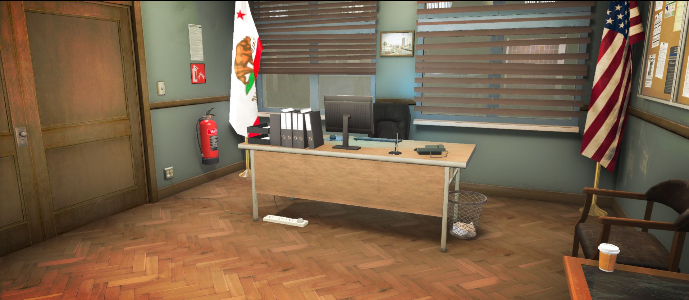
15. Văn phòng Thư ký Điều hành
Khu Đây là khu vực làm việc của thư ký, trợ lý hành chính hoặc nhân viên phụ trách lịch làm việc của Cục trưởng. Mọi cuộc hẹn, hồ sơ và khách đến gặp Cục trưởng thường được tiếp nhận tại đây trước khi được phép vào văn phòng chính.
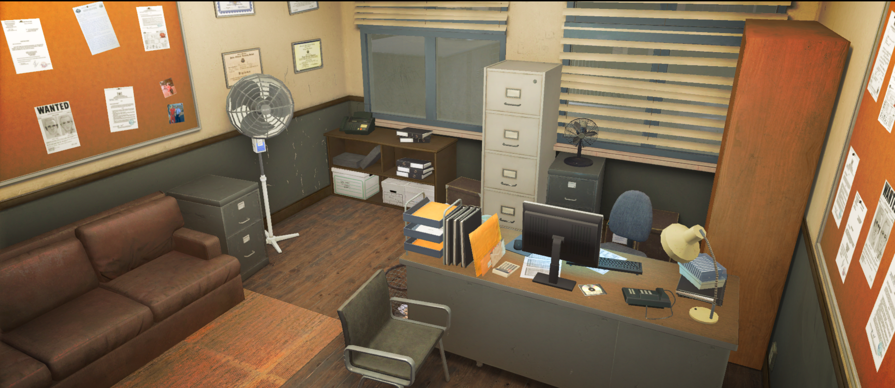
16. Văn phòng Chỉ huy
không gian làm việc riêng dành cho sĩ quan chỉ huy chịu trách nhiệm quản lý hoạt động của một đơn vị hoặc bộ phận thuộc Los Santos Police Department. Tại đây, sĩ quan chỉ huy thực hiện công tác hành chính, xem xét báo cáo, đánh giá nhân sự, lập kế hoạch hoạt động và tổ chức các cuộc họp cá nhân với nhân viên cấp dưới.
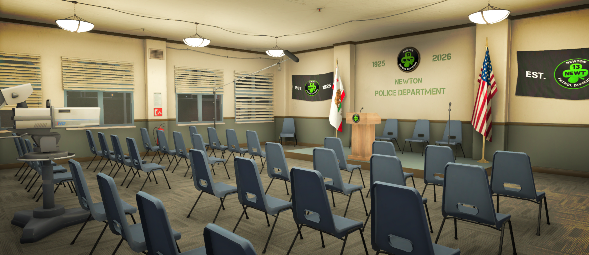
17. Phòng Họp Báo Media Relations
Nơi đơn vị Media Relations Division công bố thông tin vụ án chính thức cho báo chí.